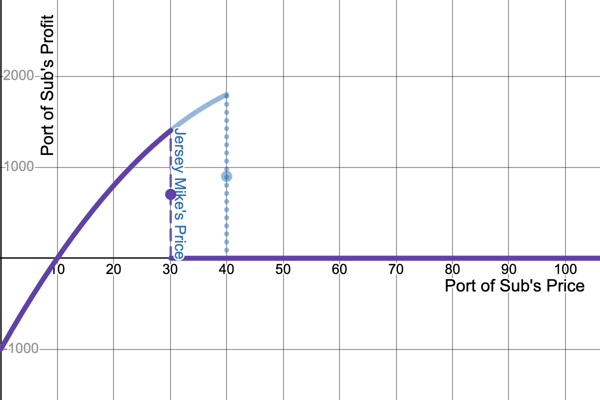

Introduction to Game Theory
Continuous Strategies
2025
Outline
Simultaneous Games with Continous Strategies
Discussing the Strengths and Weaknesses of applying Nash Equilibria
Continuous strategies
So far, choices available to our players to are discrete
- For example, 2x2 game table, extensive form with a few branches
- Even chess has a countable number of strategies available to a player
- In other cases it makes more sense to model strategies as continous
- (non-countable)
When Continuous Strategies are Useful
Pricing/bidding/etc in dollar amounts
Positions in space or in political alignment
How much effort to put into a group project
Price-setting in competitive markets (Bertrand model)
Quantity-setting in competitive markets (Cournot model)
Best-Responses to Continuous Strategies
Go from discrete best-response strategies to continuous best-response rules
Note
A best-response rule inputs a value of another player’s strategy * and returns a real number: the optimal value in response
- Because there might be multiple values to one input value,
- they are technically correspondances,
- but you can treat them like functions
- this means we can’t use payoff matrices to represent these games anymore,
- instead we will graph these strategies in Cartesian coordinate systems
Price Competition
Sub Sandwich Competition: Setup
Two campus sandwich shops: Jersey Mike’s vs Port of Subs.
Assume same menu and quality, only difference is price.
Assumptions:
- Both set prices simultaneously.
- Sandwiches cost $10 each in ingrediants, labor, etc.
- Shops only care about profit: \(\Pi = p*Q - c*Q\)
- Common demand curve (customers treat as substitute goods)
Sub Sandwich Competition: Demand Curve
Individual Demand Curves
\[ \begin{equation*} D_{JM}(P_{JM},P_{PS}) = \begin{cases} 100 - P_{JM} & \text{if } P_{JM} < P_{PS} \\ \frac{1}{2} (100 - P_{JM}) & \text{if } P_{JM} = P_{PS} \\ 0 & \text{if } P_{PS} < P_{JM} \end{cases} \end{equation*} \]
\[ \begin{equation*} D_{PS}(P_{JM},P_{PS}) = \begin{cases} 100 - P_{PS} & \text{if } P_{PS} < P_{JM} \\ \frac{1}{2} (100 - P_{PS}) & \text{if } P_{PS} = P_{JM} \\ 0 & \text{if } P_{JM} < P_{PS} \end{cases} \end{equation*} \]
\(D_{JM}\): quantitiy of subs demanded at Jersey Mike’s
\(P_{JM}\): price at Jersey Mike’s, \(P_{PS}\): price at Port of Subs
- Notice each shop’s demand depends on their competitor
- Also, to make things easy, this is a symmetric game
Payoff Functions
Jersey Mike’s profit is price times number of subs: \[ \begin{align} \Pi_{jm} & = (\text{price} - \text{cost})(\textbf{quantity sold}) \\ & = (P_{jm} - 10)\mathbf{D_{jm}(P_{jm},P_{ps})} \\ & = \begin{cases} (P_{jm} - 10)(100 - P_{jm}) & \text{if } P_{jm} < P_{ps} \\ \frac{1}{2} (P_{jm} - 10)(100 - P_{jm}) & \text{if } P_{jm} = P_{ps} \\ 0 & \text{if } P_{ps} < P_{jm} \end{cases} \end{align} \]
Payoff Functions
Because of symmetry:
Jersey Mike’s payoff: \[ \begin{equation*} \Pi_{jm} = \begin{cases} (P_{jm} - 10)(100 - P_{jm}) & \text{if } P_{jm} < P_{ps} \\ \frac{1}{2} (P_{jm} - 10)(100 - P_{jm}) & \text{if } P_{jm} = P_{ps} \\ 0 & \text{if } P_{ps} < P_{jm} \end{cases} \end{equation*} \] Port of Subs’s payoff: \[ \begin{equation*} \Pi_{ps} = \begin{cases} 0 & \text{if } P_{jm} < P_{ps} \\ \frac{1}{2} (P_{ps} - 10)(100 - P_{ps}) & \text{if } P_{jm} = P_{ps} \\ (P_{ps} - 10)(100 - P_{ps}) & \text{if } P_{ps} < P_{jm} \end{cases} \end{equation*} \]
Checking Strategy Profiles
To start, suppose Port of Subs charges $40 per sandwich:

How much should Jersey Mike’s charge to maximize profit?
- $39.99!
Checking Strategy Profiles
If Jersey Mike’s charges $30, does Port of Subs have regrets?
- They would rather charge $29.99 and earn positive profit > 0
Nash in Sandwich Pricing Game
What is the Nash equilibrium of this game?
\[ \begin{equation*} \Pi_{jm} = \begin{cases} (P_{jm} - 10)(100 - P_{jm}) & \text{if } P_{jm} < P_{ps} \\ \frac{1}{2} (P_{jm} - 10)(100 - P_{jm}) & \text{if } P_{jm} = P_{ps} \\ 0 & \text{if } P_{ps} < P_{jm} \end{cases} \end{equation*} \] \[ \begin{equation*} \Pi_{ps} = \begin{cases} 0 & \text{if } P_{jm} < P_{ps} \\ \frac{1}{2} (P_{ps} - 10)(100 - P_{ps}) & \text{if } P_{jm} = P_{ps} \\ (P_{ps} - 10)(100 - P_{ps}) & \text{if } P_{ps} < P_{jm} \end{cases} \end{equation*} \]
Nash in Sandwich Pricing Game
Nash: Both shops set \({\color{P_{jm}=P_{ps}=\$blue}10}\)
\[ \begin{equation*} \Pi_{jm} = \begin{cases} ({\color{blue} 10} - 10)(100 - {\color{blue} 10}) & = 0 & \text{if } P_{jm} < {\color{blue} 10} \\ \frac{1}{2} ({\color{blue} 10} - 10)(100 - {\color{blue} 10}) & = 0 & \text{if } P_{jm} = {\color{blue} 10} \\ 0 & & \text{if } P_{jm} < {\color{blue} 10} \end{cases} \end{equation*} \] \[ \begin{equation*} \Pi_{ps} = \begin{cases} 0 & & \text{if } {\color{blue} 10} < P_{ps} \\ \frac{1}{2} ({\color{blue} 10} - 10)(100 - {\color{blue} 10}) & =0 & \text{if } P_{ps} = {\color{blue} 10} \\ ({\color{blue} 10} - 10)(100 - {\color{blue} 10}) & =0 & \text{if } P_{ps} < {\color{blue} 10} \end{cases} \end{equation*} \]
- Everyone is indifferent between undercutting, overpricing, or keeping price 10
Price Competition Outcomes
In this game:
Both firms charge their marginal cost
Consumer surplus is mazimized
Both firms make zero profit
Does competition always lead to zero profit?
How might firms try to increase profits?
Cartels, collusion, coordination might form
but only if coordination is enforcable
usually this is illegal
What about legal coordination?
Oligopoly
Market Competition
Some definitions of competition:
Monopoly: A single firm in a market
Oligopoly: Only a few firms
- Duopoly: Two firms (like we’ve been looking at)
Perfect Competition: Enough firms to guarantee zero-profit
Monopoly Model
What would a single firm do in the market?
\[ \Pi = (p-10)(100-p) \]
- Here \(p\) is the only price set by the monopolist
Monopolist’s Maximum Profit
Solving with Calculus
\[ \begin{align*} \Pi & = (p-10)(100-p) = 100p - p^2 - 1000 + 10p \\ & = -p^2 + 110p - 1000 \end{align*} \]
Find where the slope equals zero: \[ \frac{\delta \Pi}{\delta p} = -2p + 110 + 0 \]
\[ \begin{align*} \frac{\delta \Pi}{\delta p} = 0 \\ \Rightarrow -2p + 110 & = 0 \\ 110 & = 2p \\ p = \frac{110}{2} & = 55 \end{align*} \]
Derivative of Profit
Comparing Monopoly to Bertrand
If a single firm:
- Price = $55
- Profit = $2,025
If two firms competing:
- Price = $10
- Profit = $0
Price Matching Guarantees
“Store Price Gurantee – If you’re about to buy at a Best Buy store and discover a lower price than ours, let us know and we’ll match that price on the spot.”
Does this seem like competitive behavior?
Compared to our earlier price competition model,
Will prices be higher
or lower in an equilibrium with price-matching?
Price-matching Setup
Let’s use the same costs and demand curve.
Two firms; shop 1 and shop 2 who both price match.
- If \(p_1\leq p_2\), then shop 1 will sell at \(p_1\)
- but if \(p_1 > p_2\), they agree to charge only \(p_2\)
Price-matching Payoffs
Shop 1’s payoff function: \[ \begin{equation*} \Pi_1 = [\min\{p_1,p_2\}- 10][100 - \min\{p_1,p_2\}](\frac{1}{2}) \end{equation*} \] Shop 2’s payoff function: \[ \begin{equation*} \Pi_2 = [\min\{p_1,p_2\}- 10][100 - \min\{p_1,p_2\}](\frac{1}{2}) \end{equation*} \]
Price-Matching Nash
Consider both firms charging Monopolist’s prices of $55:
Is this a Nash?
If \(p_1<55\):
- \(\Pi_1(p_1,55) = [p_1 - 10][100 - p_1](\frac{1}{2}) < 2025\)
If \(p_1>55\):
- \(\Pi_1(p_1,55) = [55- 10][100 - 55](\frac{1}{2}) 2025\)
Price-Matching Payoffs
Price-Matching Nash Outcome
With price-matching:
Both firms setting high prices ($55) is stable
Price-matching removes the incentives to undercut prices!
Could be used as a form of legal collusion
Median-Voter Theorem
“Apparently, a democracy is a place where numerous elections are held at great cost without issues and with interchangeable candidates” – Gore Vidal
Political candidates sometimes have platforms that are more alike than different.
- How can we explain this with game theory?
Political Platform Game
Assume there is a single spectrum to rank political candidates:
- [0,1]: set of potential platforms which could be chosen along this scale
Also, assume only two parties:
- D(emocratic) or R(epublican)
Candidates from either party set their platform \(x_i\), where \(i\in\{D,R\}\)
- Voters choose the candidate who’se platform is closest to their ideology
Voter Preference Distribution
- Not a Nash: Democrats set too low of a platform.
Voter Preference Distribution
- Not a Nash: Democrats could steal more median voters from Republicans
Nash in Political Platform Game
Price Competition with Differentiated Products
Setup: Apple and Samsung’s Competition
Instead of a symmetric game, let’s try one with differentiated products
For example, the market for smartphones.
Let’s assume only two players; A(pple) and S(amsung).
\(D_A(P_A,P_S) = 100 - 2P_A + P_S\)
The higher \(P_A\), fewer iPhones sold
The higher \(P_S\), more people switch from Galaxy to iPhone
Apple’s Profit Function
Tim Cook’s profit based on his price and number of iPhone customers: \[ \begin{align} \pi_A & = (\text{price} - \text{cost})(\textbf{quantity sold}) \\ & = (P_A - 12)\mathbf{(100 - 2P_A + P_S)} \end{align} \]
Assume a marginal cost of 12 per unit for iPhones
Samsung’s Profit Function
Samsung’s profit based on prices and number of Galaxys sold: \[ \begin{align} \pi_S & = (P_S - 20)\mathbf{(100 - 2P_S + P_A)} \end{align} \]
Assume Samsung has a higher cost of 20 per Galaxy produced
What is a NE in this situation?
A Nash is a stable configuration of strategies
- in which each player is best responding to the other
- When each player is setting profit-maximizing price
- conditional on the other player’s price,
- there will be no incentive to change price
- Plug in one player’s best response rule into the other player’s best response rule
- to solve for the equilibrium price
Step 1: Expand Apple’s Profit Function
Let’s expand Apple’s profit function: \[ \begin{align} \pi_A & = (P_A - 12)(100 - 2P_A + P_S) \\ & = P_A(100 + P_S - 2P_A) - 12(100 + P_S - 2P_A) \end{align} \]
Step 2: Simplify the Expanded Profit Function
Let’s expand Apple’s profit function: \[ \begin{align} \pi_A & = (P_A - 10)(100 - 2P_A + P_S) \\ & = P_A(100 + P_S - 2P_A) - 12(100 + P_S - 2P_A) \end{align} \]
Now, multiply out the terms:
\[ 100 P_A + P_A P_S - 2 P_A^2 - 1200 - 12 P_S + 24 P_A \]
What should we do next to find the best price?
Step 3: Deriving Apple’s Best-Response Function
To find the best price, we differentiate \(\Pi_A\) with respect to \(P_A\).
Differentiation:
\[ \frac{d\pi_A}{dP_A} = 100 + P_S - 4P_A + 24 = P_S + 124 - 4P_A \]
Set the derivative equal to zero for maximization: \[ P_S + 124 - 4P_A = 0 \] Solve for \(P_A\): \[ BR_A(P_S) = 31 + \frac{1}{4}P_S \]
For those without Calculus background
Simplify profit function from step 2:
\[ \pi_A = {\color{purple}- 1200 - 12 P_S} + \mathbf{P_A} {\color{blue}(124 + P_S)} - {\color{green}2} \mathbf{P_A}^2 \]
Apple’s profit \(\pi_A\), depends on their choice variable, \(P_A\) * everything else we can just treat as constant
This fits a more general pattern:
\[ y = {\color{purple}A} + {\color{blue}B}x - {\color{green}C}x^2 \]
For those without Calculus background
\[ f(x) = A + Bx - Cx^2 \]
We want to find the maximum of \(f(x)\)
- as long as \(C>0\), this will take the shape of a parabola with a single peak.
- The maxmimum of this function will be reached at:
- \(x^* = \frac{B}{2C}\)
For those without Calculus background
\[ \pi_A = {\color{purple}- 1200 - 12 P_S} + \mathbf{P_A} {\color{blue}(124 + P_S)} - {\color{green}2} \mathbf{P_A}^2 \]
So going back to Apple’s profit function,
- If \(\color{blue}B = 124 + P_S\)
- and \(\color{green}C = 2\)
then applying that the maximum choice will meet \(\frac{B}{2C} = \frac{\color{blue}124+P_S}{2\times {\color{green} 2}}\),
we get the same answer of \(P_A^* = \frac{124 + P_S}{4}\)
Step 4: Samsung’s Best-Response Function
Samsung’s best-response function is similar:
\[ \begin{align} \pi_A & = (P_S - 20)(100 - 2P_S + P_A) \\ & = 100P_S - 2P_S^2 + P_A P_S - 2000 + 40P_S - 20P_A \end{align} \]
\[ \begin{align*} \frac{d\pi_S}{dP_S} & = 0 \\ 100 - 4P_S + P_A + 40 & = 0 \\ BR_S(P_A) & = 35 + .25P_A \end{align*} \]
Question: How do we find the Nash?
\[ P_A = 31 + 0.25P_S \] \[ P_S = 45 + 0.25P_A \]
- We have one best response rule for each player
- as a function of the other player’s pricing strategy
- I.e., a system of two equations and two unknowns
Step 5: Solve for Nash Equilibrium
We solve the system of equations for \(P_A\) and \(P_S\): \[ P_A = 31 + 0.25P_S \] \[ P_S = 35 + 0.25P_A \]
Remember the following from definition of Nash:
both players’ strategies are their best responses
equilibrium is intersection of best responses
Step 5.1: Transform equations
Either solve for Apple or Samsung’s price first.
I’ll start by solving for Samsung’s:
- From Apple’s Best response: \[ \color{purple} P_A = \frac{124 + P_S}{4} \]
We can re-arrange Samsung’s best response for \(P_A\) in terms of \(P_S\):
\[ \color{blue} \begin{align} P_S = \frac{140+P_A}{4} \\ \Rightarrow 4P_S - 140 = P_A \end{align} \]
Solve for \(P_S\):
Step 5.2: Solve for one variable
We’re going to use the fact that \(P_A=BR_A\) in equilibrium: \[ \begin{align} {\color{blue}4P_S - 140} & = {\color{purple} \frac{124 +P_S}{4}} \\ \Rightarrow 16P_S - 560 & = 124 + P_S \\ \Rightarrow P_S^* & = \frac{684}{15} = 45.6 \\ \end{align} \]
When Samsung sets \(P_S=45.6\), Apple’s best response will fulfill Samsung’s belief.
Step 5.3: Solve for the other variable
We could go throught steps 5.1-5.2 to solve for Apple’s eqm strategy.
- Or we could just use their best-response to Samsung’s eqm strategy!
We already solved for \(P_S^*=45.6\), so plug it into \(BR_A(P_S^*)=P_A^*\) \[ \begin{align} P_A^* & = 4{\color{green}P_S^*} -140 \\ & = 4\times{\color{green} \frac{684}{15}} - 140 \\ & = 182.4 - 140 = 42.4 \\ \end{align} \]
Step 6: Conclusion
In our Bertrand equilibrium:
\(P_A = 42.4\), \(P_S = 45.6\)
\(\Pi_A(P_A^*, P_S^*) = \$1,848.32\)
\(\Pi_S(P_A^*, P_S^*) = \$1,720.32\)
- Apple’s lower MC results in lower eqm price, higher profit than Samsung
Unlike Bertrand model with perfect substitutes,
- here firms earn positive profit because of product differentiation
Do either firm have an incentive to deviate?
Checking Apple’s Best response
Apple’s profit when Samsung’s price is set at \(P_S^*=45.6\):
Continous Strategy Nash Graphically
Recap: Price Competition Breakdown
- Step 1: Expand the profit function.
- Step 2: Simplify the expanded equation.
- Step 3: Differentiate and solve for best-response.
- Step 4: Repeat for Samsung.
- Step 5: Solve for Nash equilibrium.
Cournot Duopoly
Cournot vs Bertrand
In the smart phone game, both players set prices
- We call that a Bertrand model of oligopoly
We could also imagine firms choosing quantities
- We’ll call this the Cournot model
Cournot Competition: Creating the Payoff Functions
First of all, we need payoff functions for each player.
Payoffs: profits: \(\Pi(q) TR - TC = Pq - c(q)\).
Common demand curve: \(P = 100 - Q\),
- with two firms, so \(P = 100 - q_1 - q_2\).
Both have \(MC=10\)
Cournot Competition: Creating the Payoff Functions
This gives us: \[ \begin{align} {\color{red}\pi_1} &= (100 - {\color{red}q_1} - {\color{blue}q_2}){\color{red}q_1} - 10{\color{red}q_1} & {\color{blue}\pi_2} &= (100 - {\color{red}q_1} - {\color{blue}q_2}){\color{blue}q_2} - 10{\color{blue}q_2}\\ &= 100{\color{red}q_1} - {\color{red}q_1}^2 - {\color{red}q_1}{\color{blue}q_2} - 10{\color{red}q_1} & &= 100{\color{blue}q_2} - {\color{red}q_1}{\color{blue}q_2} - {\color{blue}q_2}^2 - 10{\color{blue}q_2}\\ &= 90{\color{red}q_1} - {\color{red}q_1}^2 - {\color{red}q_1}{\color{blue}q_2} & &= 90{\color{blue}q_2} - {\color{red}q_1}{\color{blue}q_2} - {\color{blue}q_2}^2\\ &= (90 - {\color{blue}q_2}){\color{red}q_1} - {\color{red}q_1}^2 & &= (90 - {\color{red}q_1}){\color{blue}q_2} - {\color{blue}q_2}^2 \end{align} \]
Cournot Competition: Finding Best-Response Functions
These best-response functions are in the by-now familiar quadratic form. \[ \begin{align} \frac{d}{d {\color{red}q_1}}\left[(90 - {\color{blue}q_2}){\color{red}q_1} - {\color{red}q_1}^2\right] = 0, & \frac{d}{d {\color{blue}q_2}}\left[ (90 - {\color{red}q_1}){\color{blue}q_2} - {\color{blue}q_2}^2\right]= 0 \end{align} \]
Both of them have negative squared terms, so we can look for a maximum: \[ \begin{align} {\color{red}BR_1}(q_2) &= \frac{(90 - {\color{blue}q_2})}{2(1)} & {\color{blue}BR_2}(q_1) &= \frac{(90 - {\color{red}q_1})}{2(1)}\\ &= 45 - \frac{{\color{blue}q_2}}{2} & &= 45 - \frac{{\color{red}q_1}}{2} \end{align} \]
Cournot Equilibrium graphically
Cournot Oligopoly: Finding Nash Equilibrium
Solve these best-response rules as a system of equations: \[ \begin{align} {\color{red}q_1} &= 45 - \frac{1}{2}{\color{blue}q_2}\\ {\color{blue}q_2} &= 45 - \frac{1}{2}{\color{red}q_1}\\ \implies {\color{red}q_1} &= 45 - \frac{1}{2}(45 - \frac{1}{2}{\color{red}q_1}) & {\color{blue}q_2} &= 45 - \frac{1}{2}(30)\\ {\color{red}q_1} &= 45 - \frac{45}{2} + \frac{1}{4}{\color{red}q_1} & &= 45 - 15\\ \frac{3}{4}{\color{red}q_1} &= \frac{45}{2} & {\color{blue}q_2}^* &= \boxed{30}\\ {\color{red}q_1}^* &= \boxed{30} \end{align} \]
Cournot outcome
Compare to other market outcomes:
- Bertrand with symmetric marginal costs, \(P_1^{B*}=P_2^{B*}=MC\), profits were zero
In this model:
\(P_1^{C*}=P_2^{C*}=30 > MC= 10\)
\(\pi^{C*} = (100-30-30)(30) - 10(30) = \$900\)
In Monopoly:
- \(P_M^* = \$55\), \(Q_M = 45\), \(\pi_M = \$2,025\)
Extending Cournot competition
Let’s extend this:
What happens when a third firm enters the market?
- Would prices fall? Would all three firms set similar prices?
What other real world factors affect competitive outcomes?
Conclusion: The Economics of Oligopoly
In an oligopoly:
Firms’ prices (quantities) are interdependent.
Type of competition matters (price vs quantity)
The best-response functions allow us to determine equilibrium prices (or quantities in Bertrand).

EC327 | Lecture 4 | Continuous Strategies